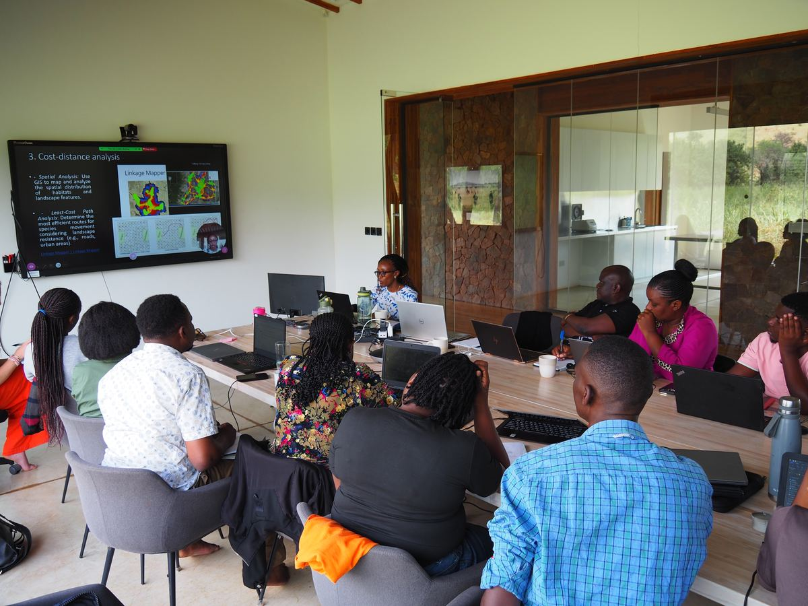
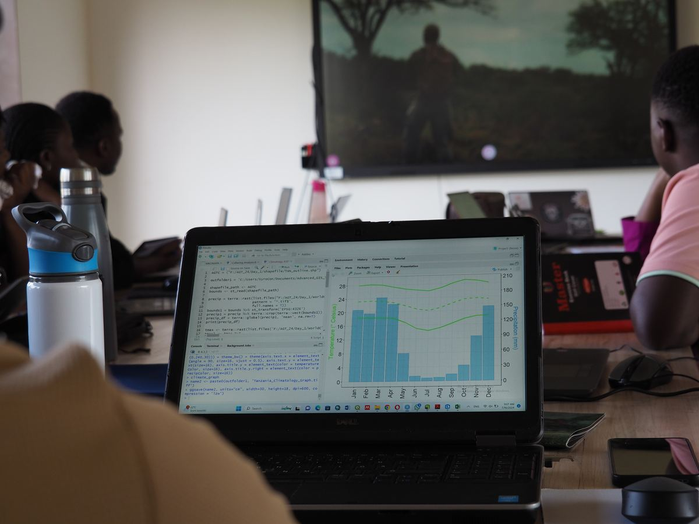
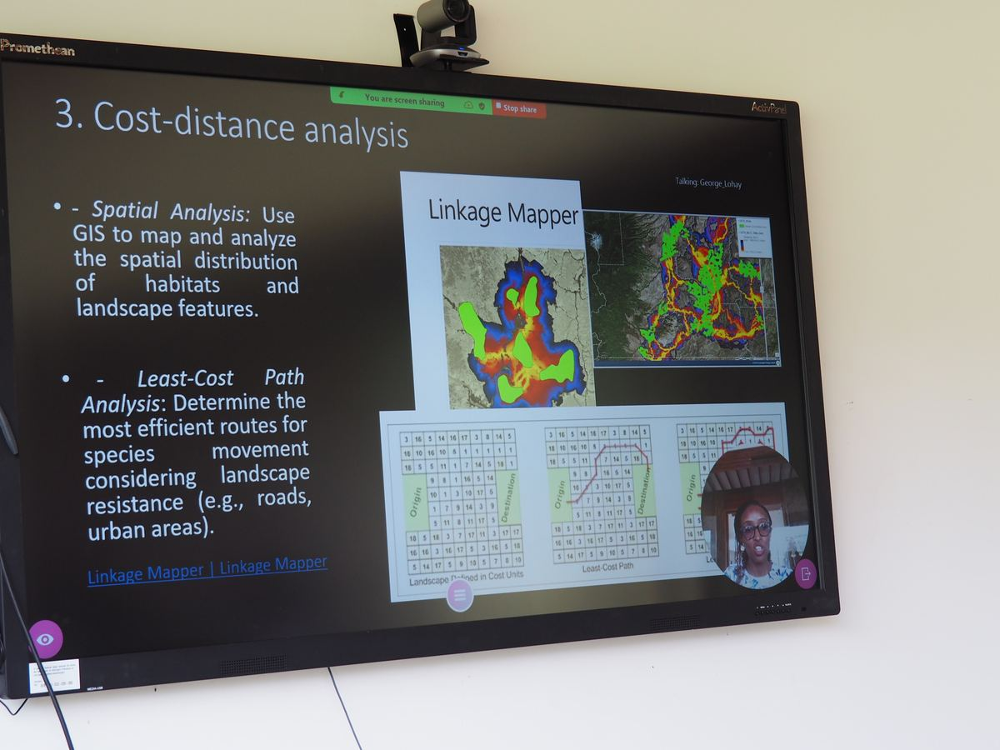

Case study — Technical consulting & capacity building
An annual, hands-on training in geospatial analysis for early to mid-career conservation practitioners, held in the Serengeti ecosystem, Tanzania.
Programme overview
The Advanced GIS Training (AGT) is hosted by Research and Innovation for the Serengeti Ecosystem (RISE) at the Grumeti Fund, and organized with collaborators from Pennsylvania State University, Montana State University Billings, the University of Connecticut and the University of Dar es Salaam. Three of its five instructors are ArdhiLytics’ principal scientists.
The training is designed for professionals, researchers and graduate students who already have a basic background in GIS and want to deepen their skills in analyzing climate and environmental data. It centres on advanced geospatial methods applied to freely available data, so that participants can keep using what they learn in their own institutions.
2024 & 2025
Two annual editions, each in July
12 countries
Represented in the 2024 cohort
On site + online
Hybrid format: in person at Grumeti, with online places
Curriculum
Core concepts and workflows in ArcGIS Pro.
Finding, downloading and processing open climate and environmental data with Google Earth Engine and R.
GIS and multi-criteria analysis for habitat suitability, and cost-distance and least-cost path methods for species movement.
Time series of vegetation and landscape change in R and Google Earth Engine.
Quantifying landscape structure and pattern with spatial statistics in R.
Analyzing ecological data in R, and presenting results as maps and figures.
How it runs
Each day combines self-paced study with group work and live teaching. Two instructors teach on site and three join remotely, and participants are expected to take charge of their own learning.
Morning
Participants wrap up the previous day’s exercise and work through self-learning material, starting on the first day with orientation and software set-up.
Midday
A live session introduces the day’s method, for example multi-criteria habitat suitability mapping or landscape pattern analysis in R.
Afternoon
Guided hands-on activities apply the method to freely available climate and environmental data.
Late afternoon
Participants complete exercises on their own or in teams, producing maps and figures from their analysis.
Who took part
The 2024 cohort brought together conservation practitioners, researchers and students from across Africa and beyond, with backgrounds ranging from wildlife management and ecology to geomatics.
Tanzania Kenya Rwanda Zambia Zimbabwe Botswana Nigeria DR Congo South Africa India United Kingdom United States
In the room
Photos: Daniel Samwel

Participants at the RISE facility follow a live session on habitat connectivity.

Hands-on analysis of climate data in R.

A remote instructor teaches cost-distance and least-cost path analysis.
Tell us who you’re training and what they need to do, and let us design a programme around it.